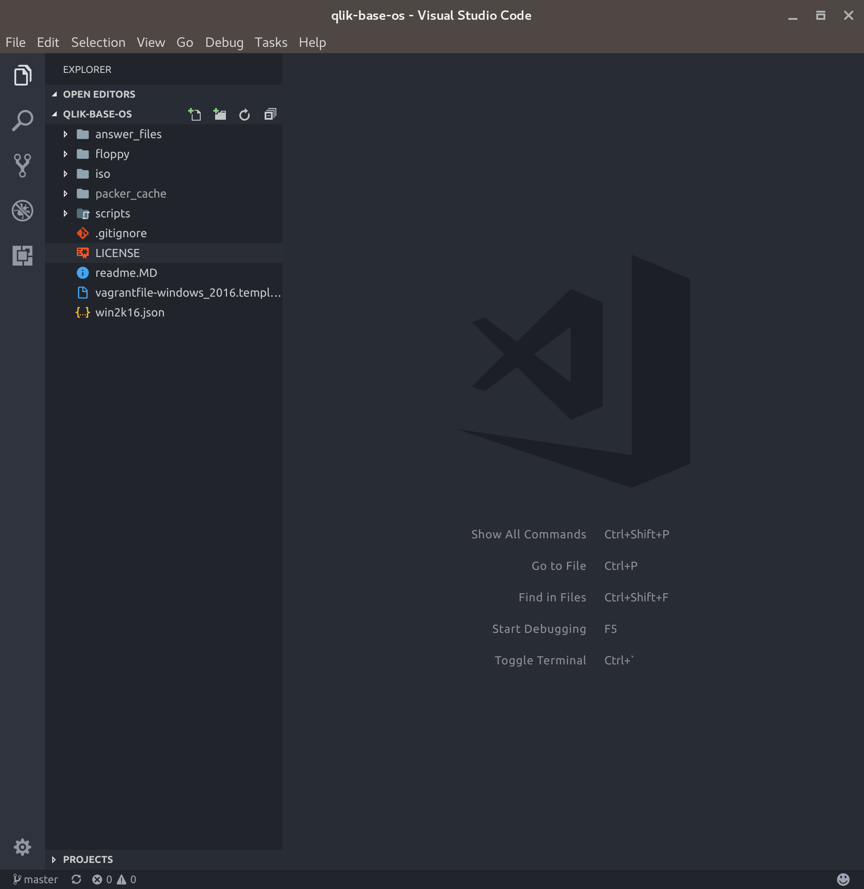
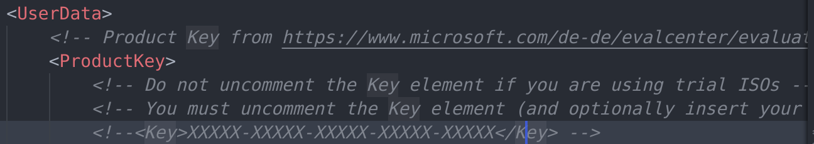
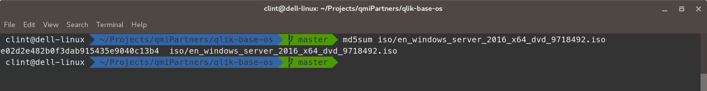
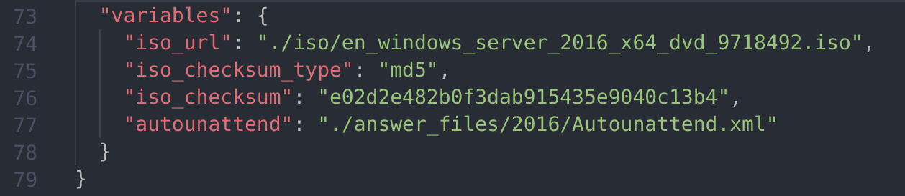

Building the base machine image
Updating the Windows 2016 License information
- Launch your text editor and open the qlik-base-os repository folder. 
- Open the Autounattend.xml file located in /answer_files/2016
- It is recommended that you enter a valid Windows 2016 Server Standard edition license key (however it is possible to use an Evaluation version of Windows. If an evaluation version is to be used skip this step.
- Search for ProductKey 
- Uncomment the key field and change the X's to be your license key
- Save the file
Get the MD5 checksum value from the Windows 2016 ISO file
You will need to download a tool for this, use something like MD5SUM or if using Windows the MD5 Checksum Tool
- Launch your terminal
- Use whatever MD5 checksum tool you have chosen to get the checksum 
- Copy the checksum value into your clipboard
Update the checksum value and the name of your Windows iso file
- From your text editor open the file /qlik-base-os/win2k16.json
- Scroll to the bottom and find the variables section 
- Update the iso file name in iso_url
- Update the iso checksum in iso_checksum
- Save the file
Start the build
- Launch your terminal
- Browse to /qlik-base-os
- Enter packer build win2k16.json
- Wait
- To view the process open VirtualBox and launch the VM, you will see it progress through the various steps
- A file will be output at the end which is the Box file to be used in Vagrant